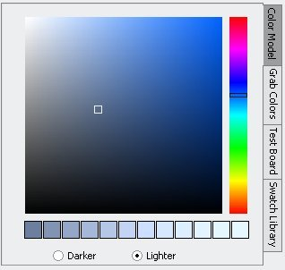
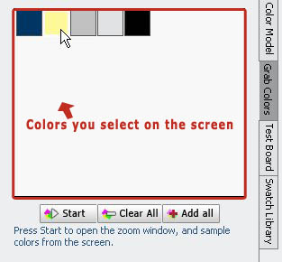
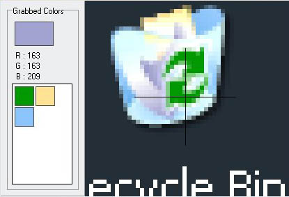
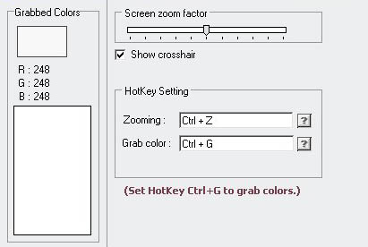
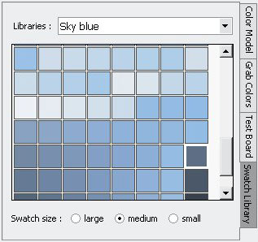
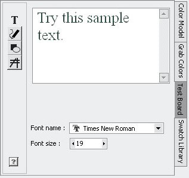
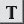
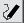
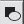
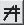

Select Colors
With Color Model

Color Model panel displays various saturation and brightness mixture values based on a fixed hue value(selected and changed from the color tracker bar on the right side.)
Meanwhile, a sequence of brightness and darkness color mixtures according to the color you have selected on the Color Model are offered.
To add colors from Color Model panel, you can just double click on the panel or press Add button below.
With Grab Color
Grab Color panel has a component called Zoom Window for you to select colors on the screen and stores them every time when you close the Zoom Window. Color stored on the Grab Color panel will not be removed until you press Clear All or close the application.
|
Zoom Window has two statys basically.
|
Status1: Zoomming start..

When you start the Zoom Window from the Grab Color panel, the zooming will be started automatically. Afterward, the Zoom Window will zoom into the area where you mouse is on the screen while shows you the color your mouse points at. You can use the hotkey of Grab color(For example, it is Ctrl+G by default.) to grab that colors into the left panel which will display them on the Grab color when you close the Zoom Window.
|
Status2: Zoomming paused..

When you move your mouse over the Zoom Window, the zooming will be paused, and be resumed when you press the hotkey of Zooming(For example, it is Ctrl+Z by default.) Color Bee also offers you the option to capture the current area zoomed first and select colors from inside the Zoom Window afterward. In this case, the zooming will also be paused after you press the hotkey of Zooming, and then the Zoom Window will display the image of area captured on the screen.
|
With Swatch Library
Swatch Library offers several different subjects of color combinations for your palette. You can add them into your own palette by pressing the button "Add" or double click on the selected color on the Swatch Library panel.
With Test Board
Test Board automatically applies the newest color into itself. While you are testing colors on the Test Board panel, you can always change a testing color by select a new color from Color Model,Grab Color, or your own palette. Test Board offers four methods of testing colors, you can switch between them by selecting the icons appeared on the left side.
|
Options On Test Board
|
|  | Write texts |
| Write texts in the textarea and test their styles, sizes, fonts with different colors.
|
|  | Free hand drawing |
| Free drawing with different size and shape of brushes.
|
|  | Shapes |
| Test different colors with some geometric figures.
|
|  | Patterns and lines |
| Test colors with several patterns composed by lines.
|
|